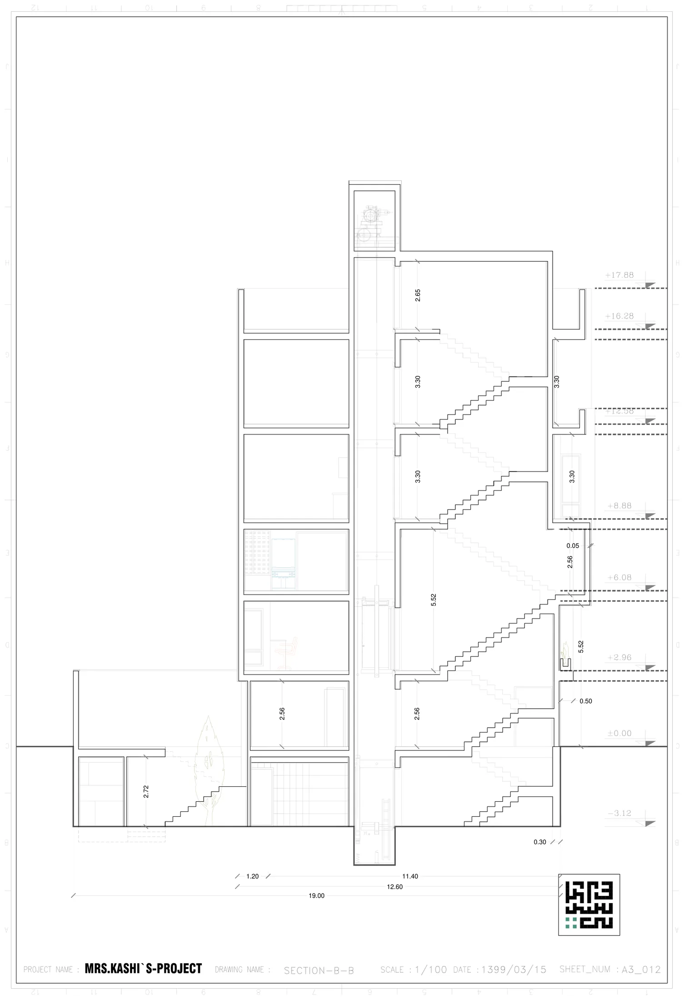

نقشه · طرح ۱۳۹۹
برش B-B
همهٔ ترازها، از −۳٫۱۲ تا +۱۷٫۸۸
{kind=link}

به چه نگاه کنیم
- نشانههای تراز در سمت راست برگه: −۳٫۱۲، ±۰٫۰۰، +۲٫۹۶، +۶٫۰۸، +۸٫۸۸، +۱۲٫۵۸، +۱۶٫۲۸ و +۱۷٫۸۸؛ هشت تراز روی یک برگه.
- عدد ۵٫۵۲ در میانهٔ برش: ارتفاع آزاد نشیمن طبقهٔ اول که دو طبقه است؛ کنارش ۲٫۵۶ برای زیرِ نیمطبقه و ۰٫۰۵ اختلاف کوچک کف نیمطبقه.
- ارتفاعهای آزاد دیگر: ۲٫۷۲ زیرزمین، ۲٫۵۶ پارکینگ، ۳٫۳۰ طبقهٔ دوم و سوم، ۲٫۶۵ اتاقک پله روی بام.
- درخت سبزرنگ در گودال باغچهٔ سمت چپ (جنوب) که از تراز −۳٫۱۲ بالا میآید و از خالیِ حیاط میگذرد؛ کنارش پلهای که از زیرزمین به حیاط میرسد.
- زنجیرهٔ پلهها در دهانهٔ شمالی که طبقهبهطبقه بالا میرود و چاه آسانسور که تا اتاقک بام در +۱۷٫۸۸ ادامه دارد.
- خط اندازهٔ پایین برگه: ۱٫۲۰ + ۱۱٫۴۰ = ۱۲٫۶۰ (کنسول و بدنه) و ۱۹٫۰۰ طول کل زمین.
- عدد ۰٫۵۰ کنار تراز +۲٫۹۶: کف بالاآمدهٔ طبقهٔ اول؛ ۰٫۳۰ ضخامت دال کف زیرزمین.
- پیشآمدگی ۱٫۲۰ متری طبقات بالا به سمت حیاط که بالای بدنهٔ همکف بیرون زده است.
فضاها
زیرزمین (واحد سرایداری، گودال باغچه)، پارکینگ همکف، نشیمن دوطبقه (۵٫۵۲)، نیمطبقهٔ اول (+۶٫۰۸)، طبقهٔ دوم، طبقهٔ سوم، چاه آسانسور، پلکان، اتاقک پله روی بام (+۱۷٫۸۸)
یادداشت
این برش ستون فقرات طرح ۱۳۹۹ است: تنها برگهای که نشان میدهد نیمطبقهها چگونه در دل نشیمن بلند مینشینند و درخت چگونه از گودال باغچه تا حیاط بالا میآید. آنچه حل شده: ترازها، ارتفاعهای آزاد، جای آسانسور و پله. آنچه حل نشده: بام باغ (تراز +۱۶٫۲۸) فقط یک خط است و کاشتی روی آن ترسیم نشده؛ تراز −۲ که در شاخصها آمده اصلاً وجود ندارد؛ نما و سازه در هیچ برگهای نیست. کادر عنوان: MRS.KASHI`S-PROJECT / SECTION-B-B / مقیاس ۱/۱۰۰ / تاریخ ۱۳۹۹/۰۳/۱۵ / شمارهٔ A3_012 — این برگه از مجموعهٔ بازنگری الف است و در مجموعهٔ بازنگری ب برش تازهای نیامده. نشان مربعی معمار پایین راست برگه چاپ شده است.